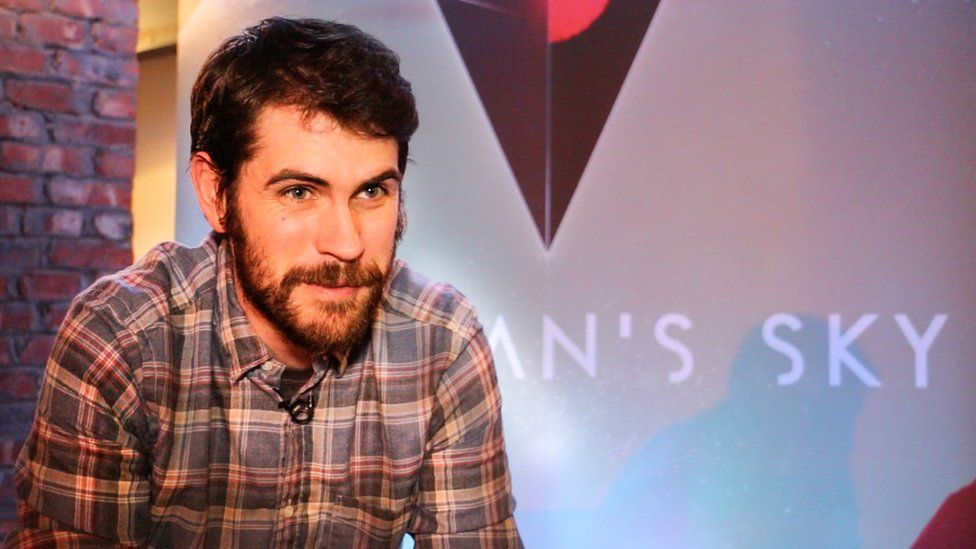

The History of No Mans Sky
All images in this website are credited to Hello Games, 2016
Hello Games Ltd. was founded in 2008 by Sean Murray and Grant Duncan in Guildford, UK. Murray had previously worked at
Electronic Arts, or EA, the company responsible for the Fifa, Madden, and NHL videogame series. Murray and Hello Games
worked on and released Joe Danger in 2010, a platform/racing game for the Play Station 3. The game was
met with above-average success, which led to the development of a sequel in 2012. Pictured left is Sean Murray
In late 2012, Murray had the idea for a science fiction game inspired by scifi media of the 1970s and 1980s, such as Star Wars
and Star Trek. The company envisioned a procedurally generated universe, and began work on the game. A trailer was shown
at the VGX 2013 Award Show, which generated immense hype for the game. Unfortunatly for No Mans Sky, a flood
in their home town two weeks after VGX 2013 destroyed much of the progress which had been made.
The studio started from scratch, developing the game over the next two years. Sony had the game formally introduced to
millions of potential viewers at E3 2014, the largest electronic exposition in the world. This, with the VGX interview,
generated ever-increasing intereset and hype in the game. Unfortunatly for the game studio, the hype and beliefs of
what the game will be like rose above the team's ability.
Upon release, the game would be what many considered as a "catagorial mess". Bugs (issues) commonplace, the multiplayer
not working, the game lacking features etc... The game received horrible reviews upon launch, receiving constant critique
and scrutiny. It seemed as if No Man's Sky was just another failure or a scam. However, Hello Games refused to give up on
the game. On the left is the E3 Launch Trailer

Hello Games, realizing constant press interviews led to the immense hype for the game and caused the disappointing release
refused to give further information to the press, and secretly began working on updates. Over the next year, thousands of
bugs were fixed and features added. By 2017, the Game had begun to reach the initial expectations. By 2019 and 2020, it
had surpassed them.
Hello Games still works on No Man's Sky, updating the game and adding new features, only publically announcing new updates
just before the update is set to go live.
To read on how the game itself works, click on the "How It Works" link on the left. Or, you can return to
the homepage. To the right is attached a video that gives a more detailed overview of the history of this game, and where
it stands today. Video does contain crude language